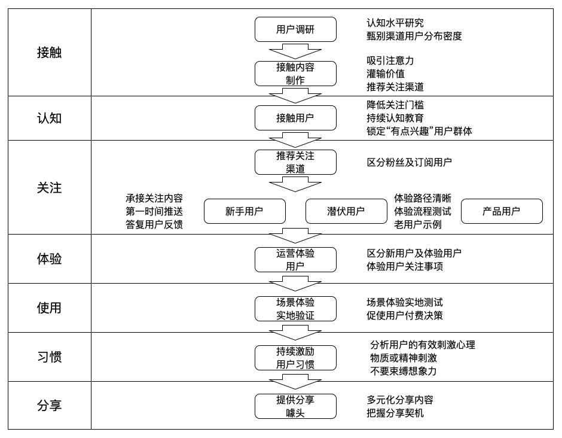

运营是以特定产品（或个人/品牌）为运营对象，通过对运营资源（人力、财物、渠道）的最优化配置，持续提升目标人群（受众用户）与产品的关联度。这些关联度从低到高依次是：初次接触产品、初步认识产品价值、关注产品（全面了解）、初次体验产品、决定使用产品、为产品付费、习惯使用产品、心甘情愿地向其他用户分享产品
想让用户为产品买单，那就得先稳扎稳打地回归用户视角，为用户进行产品的认知教育，让用户关注产品，并尝试体验产品
液态属性：我们的运营方法必须基于企业、产品的内外部刚性环境（例如互联网人文环境、竞品情况、用户心智认知背景等），持续的自我“塑形”、填满其中的隙缝，而非与之对抗
弹簧属性：在液态属性的基础上，将企业资源整合成一股强有力的弹簧，一伸一缩间，释放无穷的威力
用户视角：用户在进行任何商业决策前、决策中、决策后，对产品的一系列心智认知及行为模式的变化
用户非常务实，要用户放弃旧有的行为习惯，可不是几句“戳中痛点的宣传标语”，或者找明星代言个品牌广告就能做到的。要改变用户的习惯，需要在感性、理性层面让用户切实感受到改善。若对于用户需求强度不高或者可替代类产品较多的情况，还需要在外在的“物质或者精神刺激”，又或者是“制度约束”用户持续某个行为，方能做到。（认知、体验、习惯培养）
用户养成运营：结合行业、产品特征，调研产品用户（用户视角）的特性，包括接触用户的渠道、用户认知水平、行为习惯，以用户视角驱动运营策略，在用户需要的时候恰到好处地出现在用户面前，并不断扩散影响用户人群，持续引导、打动用户、最大程度地缩短用户从接触产品到习惯使用产品的时间，激励用户分享产品，最终实现产品价值至商业价值的转化
“接触用户内容”，通过包含三个属性：吸引用户注意力、灌输产品价值、推荐关注（体验）渠道
为确保接触用户内容的有效性，满足两个条件：
- 1）能为产品受众群体的认知水平所理解
- 2）内容长度适中，视接触渠道的特性而定
用户养成整体图：

群体“用户养成”模型简化总图：

“用户养成”时间意即用户首次接触产品到最终成为习惯使用产品的用户所需要的时间
决策成本，意即用户使用某个产品所需要付出的物质或精神的代价总和
典型的高决策成本的产品有：金融理财类、付费的工具游戏类和2B的企业级应用类产品，用户养成时间最长的环节通常是从“关注”到“体验”环节
典型的低决策成本的产品有：社交类、免费的休闲、娱乐、游戏类和电商工具类产品，用户养成时间最长的环节是从“使用”到“习惯”环节
用户习惯培养的常规运营策略：
- 1）针对价格敏感型用户抛出小恩小惠
- 2）针对好胜心强的用户进行攀比刺激
- 3）为活跃用户提供特权
- 4）用户习惯行为的倍增激励
- 5）精细化激励
- 6）限制用户的使用时间
- 7）引入UGC属性
- 8）启发式借鉴才是核心竞争力
“接触内容”制作的一个原则：务必根据用户的认知层次、接触渠道量身定制
从”认知“到”关注“的运营工作流程图：

尽管确保”用户持续关注“产品并不能缩短”用户养成“时间，但却能够有效挽留众多的”流失用户“
用户检验产品其实就是在验证产品是否符合起初的认知预期：
- 1）颜值是否达标？
- 2）产品是否好用、易用？
- 3）产品能否解决问题？
- 4）解决后的效果是否达到预期？
付费后离开两大病因：
- 1）一是企业投入过多的运营资源在触发用户首次体验、付费上，却忽略了相应”付费后环节“的配套服务
- 2）二是可能出现在用户养成的”体验前阶段“，为了让用户尽快从”关注“状态转变成”付费“，做出一些过于夸张的产品描述，或者是活动宣传渲染过度，致使用户期待过高
三类导致”习惯用户“流失的情况：
- 1）竞品出现：一是竞品在产品功能、体验层面优于你们的产品；二是对方采用”价格战术“；三是”软实力“出现问题，要么是利益受损，要么是心理受委屈了
- 2）替代品出现：从习惯用户”无缘无故“的离去，就应该第一时间收到警报；需要不断学习探索新鲜的商业现象
- 3）用户生命周期自然衰亡：可以在产品定义一个”临界点“，让即将”消亡“的用户触发这个临界点功能，为平台开拓新的潜在忠诚用户增长点
用户分享的七种心理驱动力：
1）”利己“驱动，满足心理需求：基本物质需求。如果用户是价格敏感型用户，那么”利己“驱动也是一个不错的选择
2）”利他“驱动，满足的心理需求：归属、互惠互利。”利他驱动“的内存含义其实是”利己驱动“的延伸，只是通过”人情“这种特殊的介质完成了”利益债务“的使命
3）”谈资“驱动，满足的心理需求：归属、安全（社交）。一般是大众话题、娱乐、八卦、出乎人们预期的事情
4）”塑形“驱动，满足的心理需求：尊重（彰显与众不同）。人们永远希望周边的人都觉得自己很聪明、很美丽、很富裕、有权威，当你的产品或内容能帮助用户自身塑造更好的形象时，他们非常乐于分享
5）”表达“驱动，满足的心理需求：尊重（有影响力）。你能为用户提供他们急于想要表达，或想要 吐槽的内容，那么，用户是非常乐于帮你分享的
6）”攀比“驱动，满足的心理需求：尊重（权威）。如果你的产品（或内容）能够让用户觉得自己居于平均水平之上，他们是非常乐意将信息分享出去的
7）”情绪（共鸣）“驱动，满足的心理需求：归属、安全。”敬畏、兴奋、愉悦、愤怒、警惕“等情绪最容易让用户产生”分享“的冲动。当我们想要刺激用户的”共鸣“时，除了在题材上选取用户群体的”共同美好记忆“之外，还可以在内容呈现时融入更具戏剧化的情感性元素，也能有效提升用户的分享意愿
用户养成各阶段分享触发心理：

移动互联网时代，”懒“本身就是一个巨大的用户需求
幸福感”用户养成“：
1.让用户感到有控制力：意即当人们在某个领域内对自身拥有绝对的掌控权时，会获得强烈的幸福感
- 1）提供用户一个”主宰圈“
- 2）让用户能够影响产品部分功能的走向：让用户参与产品新版本的需求迭代
- 3）让用户决定”商品品种“甚至价格
2.感到可量化的进步
- 1）通过某种激励让用户为产品中的某项功能付出真正意义上的努力
- 2）让用户”明显感知“到进步，将”用户的努力“进行量化
3.赋予更高意义
- 1）乐趣、激情、使命
- 2）更高的使命感——让用户成为某个更广阔的领域、事业的一部分，拔高生命的高度
种子期运营的核心目标：验证产品解决方案（产品概念）是否真正为用户创造价值
哪些类型的产品可以路过”研发“参与呢？
- 应用工具类：如支付宝、百度地图、滴滴出行、美团外卖等
- 电商工具类：如淘宝、京东、苏宁易购
- 社交类：如微信、微博、知乎、陌陌
- 资讯内容类：如今日头条、好奇心日报
- 泛娱乐类：包括所有的游戏、直播、短视频、唱吧等
最大程度缩短”最低限度解决方案“的制作及验证时间的思想，可以通过”人工搭配“来巧妙处理
如果解决方案后续是个付费服务（付费产品），那么就要重视用户的付费意愿。种子期往往需要开出折扣价格，让用户选择是否继续使用服务。具体折扣的多少，视具体的需求强烈度以及解决方案的”粗糙“程度而定，但务必要让用户真实的”掏钱包“
如果解决方案后续是个免费服务，那么就要格外重视用户留存率及用户推荐率。对于免费产品，它能否取得成功，完全是靠海量用户的关注力及影响力来创造盈利价值。而能否持续获得用户注意力的问题，就是通过”留存率“来判断，是否具有吸引力以及病毒式增长的能力，则可以从用户”推荐率“看出来
种子期阶段的运营工作内容：
- 最低限度解决方案制造
- 前期种子用户锁定
- 用户认知水平调查
- 用户密度研究
- 用户认知内容（活动）准备
- 确保沟通渠道畅通
- 用户体验前后台服务准备、测试
- 用户接触及解决方案启动
- 用户互动及答疑
- 设定用户使用周期、用户反馈数据收集
- 用户深度访谈
- 决策支持信息汇总及分析
- 结论判断（或放弃、或优化）
两个”道“：
- 1）商业竞争的实质是用最短的时间找到用户需求与解决方案的最高契合点
- 2）运营思维与创业者思维高度一致，没有创业者意识的运营难以成为优秀的运营人
如何控制”促使用户快速体验“的诱惑力度呢？视产品解决方案本身的需求强烈度来看：
- 1）如果是替用户解决”大麻烦“的服务方案，向用户证明我们服务提供方不是”骗子“即可
- 2）”非刚需“类产品，”精神类诱惑“的价值会远高于物质类诱惑
- 3）对于付费类的非刚需产品，”物质“激励已经成为最有效的促进用户使用的手段了
在萌芽期前半阶段，产品上线前，运营重心是做好后勤准备，运营用户的”关注渠道“、储备萌芽期的用户、提交运营管理平台需求、组织产品内测、公测、外界预热；萌芽期后半阶段，产品上线后，运营重心则转移为”培养健康的用户养成梯形“
关注渠道的内容定位：
- 对用户有价值的内容
- 促使用户传播的内容
- 产品的”认知教育“
- 产品研发进度的公布
对于大众化的产品，首批产品的测试用户其实控制在200-500人就足够了。如果是社交类UGC产品，或者是需要众多用户才能体现产品价值的平台类产品，用户数越高越好
纯粹以提供渠道服务的电商平台，若销售的主体商品也是能用且大众化的商品（如淘宝店），那么其实这类商业模式从一开始就已经深陷”流量成本“、”价格战“的红海角逐中。”赚钱效率“较低，如今很少能被资本看上，专攻奇特或优质商品的电商平台（如垂直海淘电商）除外
常见的运营后台管理功能主要如下：
- 1）用户数据统计模块：新增、时长、注册、活跃、重复、新增渠道、终端设备，都要涵盖
- 2）运营内容发布及审核模块：所有用户进行”公告“、”宣传活动“、”推荐内容“等方面的栏目内容需求，需要后台能够有相应的素材管理、编辑、预览、审核、发布等功能，能统计相应内容的阅读率、完整阅读率、活动转化率等相应的运营支撑数据
- 3）用户反馈数据收集及处理模块：前台用户能反馈，后台需要有相应的收集、汇总、处理反馈功能的模块
- 4）运营监控、处理数据：类似于营销用的CRM（客户关系管理系统），对于需要进行精细化用户运营管理的产品，还需要后台能够对被管理用户进行识别、标记、处理，提供处理结果以及相应的统计功能，以方便运营人员对关键用户的管理，或者对内部运营人员的工作质量、效果进行监管等。此外，甚至还有会员、用户积分系统等
- 5）用户生成内容的发布及审核：具有用户”投稿“功能的”内容型产品“，或者对社区氛围、内容质量要求较高的UGC类产品，往往后台还需要支持对用户内容的审核、反馈，甚至敏感关键词的监测功能，以供运营人进行人为判断
- 6）用户操作行为数据：用户具体对某些功能模块、某些菜单、某些产品输入框的点击操作，或者用户从某功能流向到某功能的”行为轨迹“的统计数据。这些数据主要是产品经理等岗位的员工最为关注的，但运营人也能够通过这些数据更好地了解用户需求
- 7）因时制宜的上线运营管理功能：运营后台管理具体需求的落实，应当是基于阶段性运营目标，基于自身产品、用户的变化 ，不断地去扩充和完善
确定内测合格的标准：
1）可使用性指标
2）认知性指标
3）用户体验指标
4）针对具有线下环节的O2O类产品，内测期间还需要完整覆盖线上、线下的完整流程，需要所有的内测用户”实地跑一遍“，不能为图省时、省事而对线下运作、管理等流程”模拟“了事
5）数据安全性、稳定性、平台兼容性等指标，应当在技术测试环节就已经进行处理了，高并发压力测试，可以留待产品萌芽期之后逐步完善
对外公测：
- 1）将公测视为提供给忠实用户的福利
- 2）预热
- 3）产品发布会筹备
产品发布会筹备事项：
- 确定目标
- 确认预算
- 申请场地
- 制定发布会内容、流程、备案
- 人事安排
- 邀请与会成员名单（用户、嘉宾、合作商、媒体、权威机构等）
- 通知联络
- 会务接待
- 发布会现场素材收集（视频、拍照）
- 总结
产品萌芽期阶段重点状态”用户养成梯形“中的”体验至使用“
在确定了哪个时间周期（日、周或月）的留存率作为萌芽期的核心留存率指标后，一种简单粗暴的定义”合格指标“的策略是：
- 如果业界有知名成熟的可替代产品（意即你们的产品是挑战角色），则可以将对方的新用户留存率乘以1.5~2的一个系数作为你们的合格指标（这通常是一个极高的要求）
- 若你们动作的是一个业界全新的产品，则可以从更现实的角度来评估：市场盈利空间（或者吸引风投的要求，例如大名鼎鼎的红杉资本就只考虑10亿美元以上的市场项目），在初步评估了市场容量后，可以逆推出在这种容量的前提下能够盈利的最低限度”留存率“要求，并在最低限度留存率上乘以一个1~1.5的系数作为合格指标
应对竞争：
- 1）”预“：预先规避；预先与潜在竞争者拉开距离，优势不明显之前 ，能低调尽量低调
- 2）”防“：目的是尽量在竞争者进入之前延长”先发“时间，但不可能完全规避竞争；打造自己的核心竞争力；磨炼自己的”独门秘籍“，让对手没那么容易抄袭；产品能力容易抄袭，但运营能力却润物细无声，成败毫厘间，极难抄袭
- 3）”攻“
- 4）”联“：以更高的”格局观“来看待竞争者——把它当作自身进步的朋友，或者当作盟友，携手一起做大、做强市场，推动整个产品链的发展
成长期运营的核心指标：快速拉升用户数量。成长期的核心目标是最不”单纯“的：（或付费数）增速为主，并随时兼顾”用户养成梯形“的健康度，一旦哪个环节出现”异常“，便随时调整核心指标进行”梯形“修复
成长期运营七步走：
- 1）明确阶段核心指标
- 2）梳理内部可调配资源（知己）
- 3）确认目标用户状态、产品特性、市场竞争优势（知彼）
- 4）制定用户增长引擎组合
- 5）实施、微调、优化
- 6）阶段目标验收
- 7）固化有效策略，舍弃低效策略（从第一步开始循环）
包含四类特征的”视觉效果“更容易被用户点开：”喜好“、”记忆共鸣“、“与众不同”、“社会热点”
三类感染源：现金补贴、利润让利、虚拟让利
成熟期产品运营目标：
- 1）缩短新用户至习惯用户的养成时间
- 2）运营新功能，重焕产品生机
- 3）新生用户的预热
切忌牺牲用户价值实现产品盈利
UGC产品是基于特定主题，为特定群体开辟了一个内容生产、阅读、沟通的空间，通过内容这一精神媒介，引发的人与价值内容的关联、人与人的关联、人与特定社会群体的关联，人与商业的间接关联，最终为UGC产品的开发商创造商业价值的一种互联网商业形态
产品的调性决定了早期用户的质量，而早期用户的参与度会极大影响数据反馈以及后续产品走向
“调性建设”四步：
- 1）用户调研，了解用户认知程度，回归新用户心态
- 2）满足用户体验环节UGC平台各角色关注的要点
- 3）首页指引，进一步强化新用户的体验效果（促进体验用户转化为使用用户）
- 4）内容实施阶段，根据前面的要求填充内容，制定激励新用户生产内容的措施
用户体验一个全新的UGC产品时，他的心态其实非常类似一个被男孩追求的少女的心态：敏感茫然，有点期待，有点质疑，不知所措
内容消费者关注的要素：“颜值”；核心用户的认知水平、兴趣点；用户阅读体验的问题；
内容生产者关注的要素：人气和反馈率；生产内容时的输入体验；内容层次问题；
内容消费者反感的因素主要有三类：
- 1）信息噪音：别让用户看他不想看的，让用户尽可能高效地获取他有兴趣的内容
- 2）质量水化：内容质量“水化”，一是由于前期UGC产品内部关系链的关联没能控制好；二是大量“新内容”的产生，高质量内容被稀释；
- 3）有求无回：在“非平等关系”的开放型UGC平台上已经是必然事件，只是严重程度不同，如微博给明星发私信
有些人可能担心对用户做限制会影响用户的推广。一般来说，平台内容越是能够保持高质量，用户其实越是想入驻，限制一下用户往往更能激起他们主动提升自身内容质量的欲望。
用户基数大的平台可以考虑进行内容隔离，用户第一次注册的时候，就引导用户关注他喜欢的话题
首页资源稀缺与内容生产者的海量内容之间的矛盾解决三个思路：
- 1）个性化首页设计：可以参考机器学习的算法，持续通过用户的行为——喜欢或者不喜欢、用户的画像、内容的浏览时长、点赞、分享、收藏记录，以及用户的自主关注对象，来达到优化首页展现内容与用户需求的匹配度
- 2）去中心化：可以适当放出一小部分的首页展示资源给运营干预。其他的由用户的喜好来选择，建议至少要低于20%
- 3）去马太效应
UGC各类用户的流向及原因总结：

UGC各类用户的运营策略建议：

公众号价值 = 活跃订阅用户数 x 用户质量 x 影响力
提升公众号价值的四个策略：
- 1）持续满足订阅用户的期待
- 确保每篇推文的质量不低于历史推文
- 内容始终保持清晰定位
- 换位自检，放弃低价值文章：本文提出了什么问题？这个问题有实质价值吗，还是空中楼阁？文章是否解决了这个问题？解决问题的阐述够清晰吗，用户能否读懂？
- 2）提高公众号的“人格魅力”
- 权威
- 诚信
- 自然
- 有趣
- 3）以“双赢”为前提进行商业变现
- 4）让公众号保持适应性进化
公众号定位的整体过程：